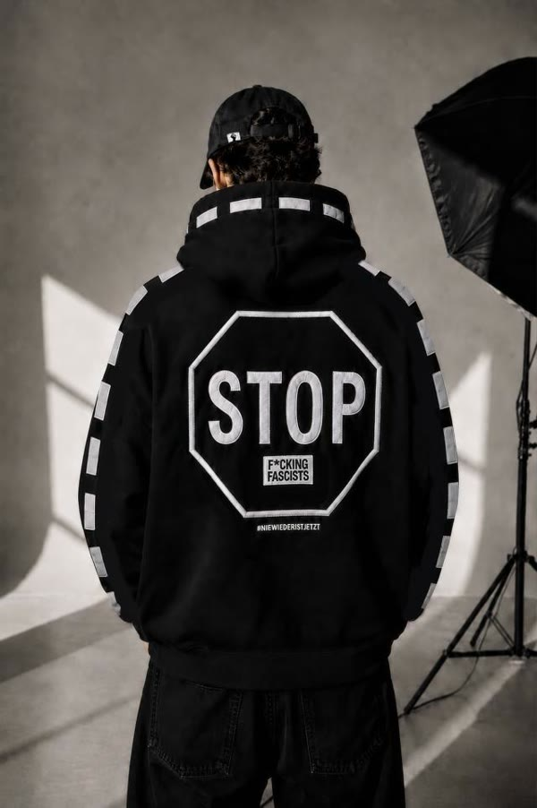
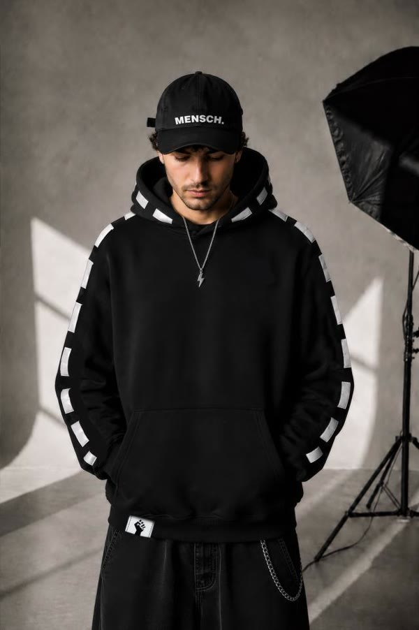
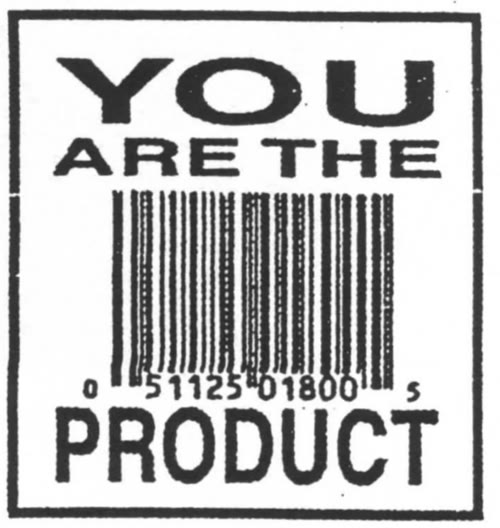

STOP – F*cking Fascists


Schwarzer Hoodie mit großem Stoppschild auf dem Rücken, weißen Streifen an Kapuze und Ärmeln und #NIEWIEDERISTJETZT.
Noch nicht bestellbar

Schwarzer Hoodie mit großem Stoppschild auf dem Rücken, weißen Streifen an Kapuze und Ärmeln und #NIEWIEDERISTJETZT.
Noch nicht bestellbarSchwarze Kappe mit weißer Aufschrift „MENSCH.“.
Noch nicht bestellbar
Schwarz-weißer Sticker mit Strichcode: „You are the product“.
Noch nicht bestellbar